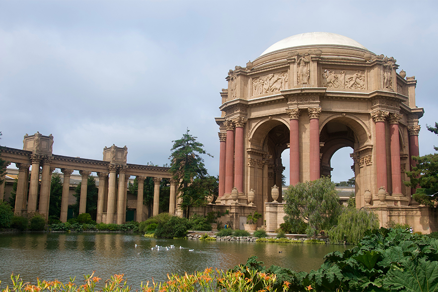
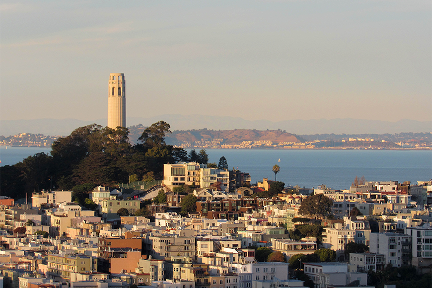
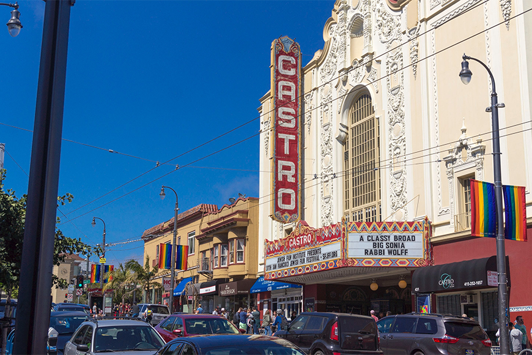
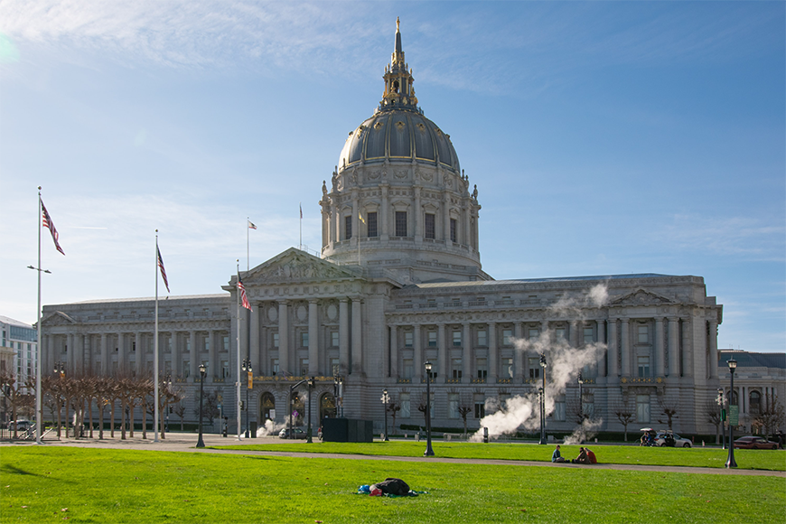
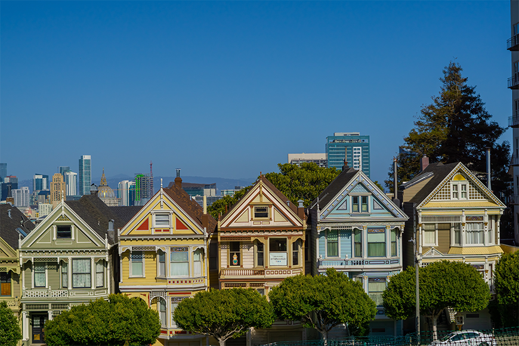
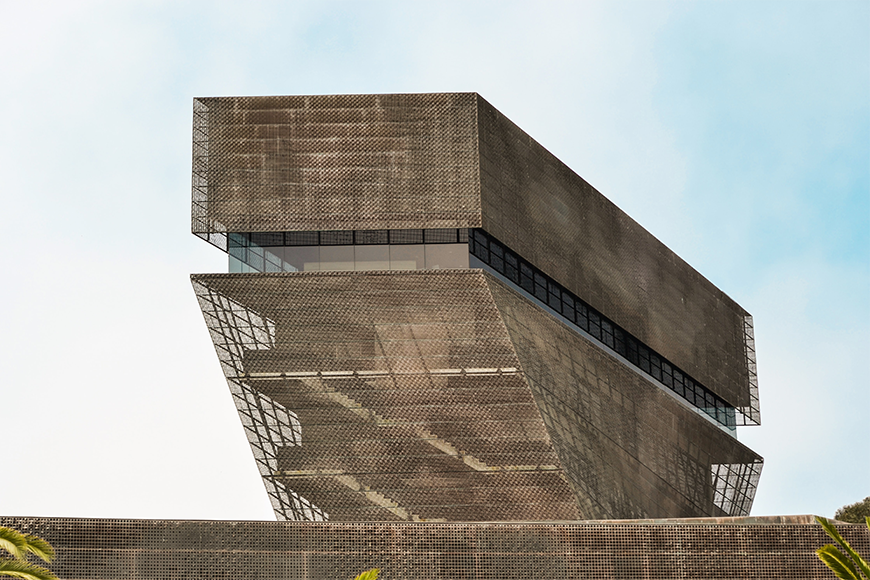
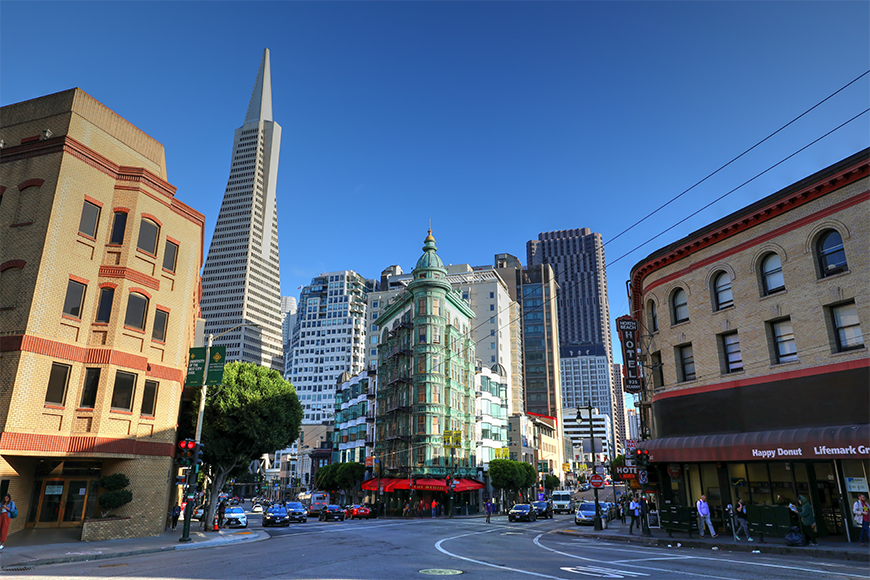

The Palace of Fine Arts is in a state of flux, waiting for another tenant after the Exploratorium moved to a new building. It was created in 1915.

Coit Tower stands at the top of Telegraph Hill like an exclamation point. The fluted concrete structure was erected in honor of Lillie Hitchcock Coit.
Completed in 1879, the Conservatory of Flowers is the oldest glass and wood Victorian structure of its kind in Northern America. It boasts roughly 16,800 windows.

The Castro Theatre’s design is Spanish Colonial, a throwback to early California and meant to evoke a Mexican cathedral. The theatre was listed as a San Francisco landmark in 1976.

The Beaux-Arts City Hall building, designed by Arthur Brown and John Bakewell, has existed here since 1915. Its regal dome is the fifth largest in the world.

The row of Victorian houses on Steiner Street are known simply as the Painted Ladies. This scenic street has been the backdrop for many movies and TV shows.

The de Young exhibits American art from the 17th century to the present. The modernist copper-clad building is expected to oxidize over time and take on a greenish tone.

The Transamerica Pyramid was reviled by many when it was completed in 1972 for the Transamerica Corporation. Now, it's one of the most beloved buildings in the city.